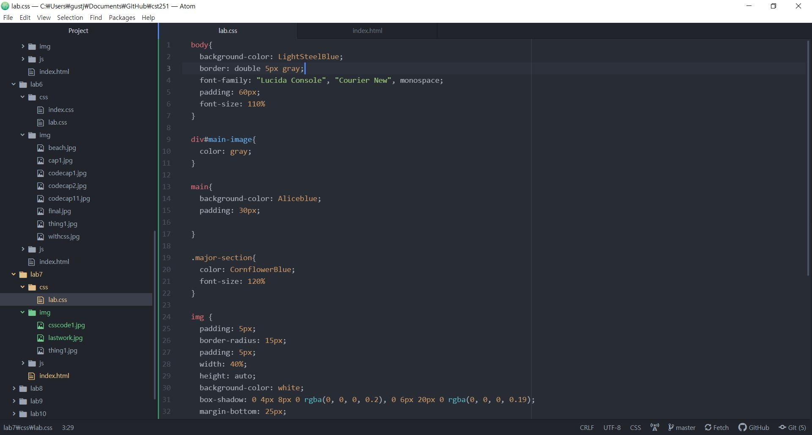
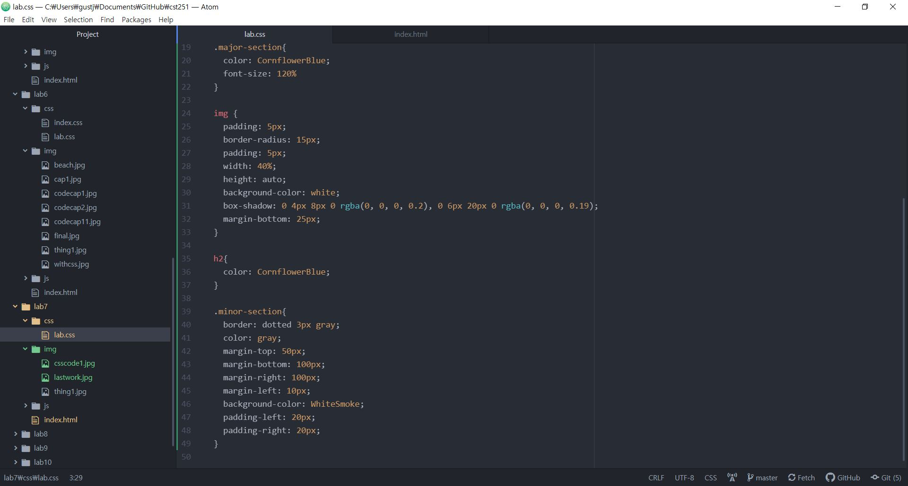
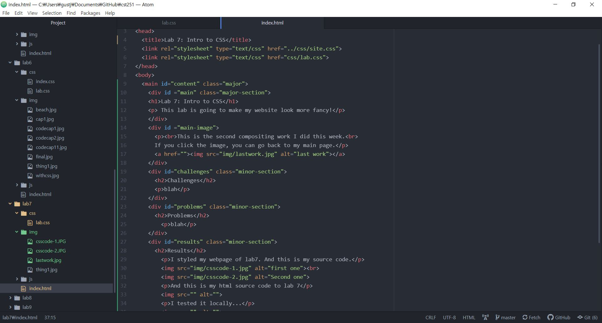
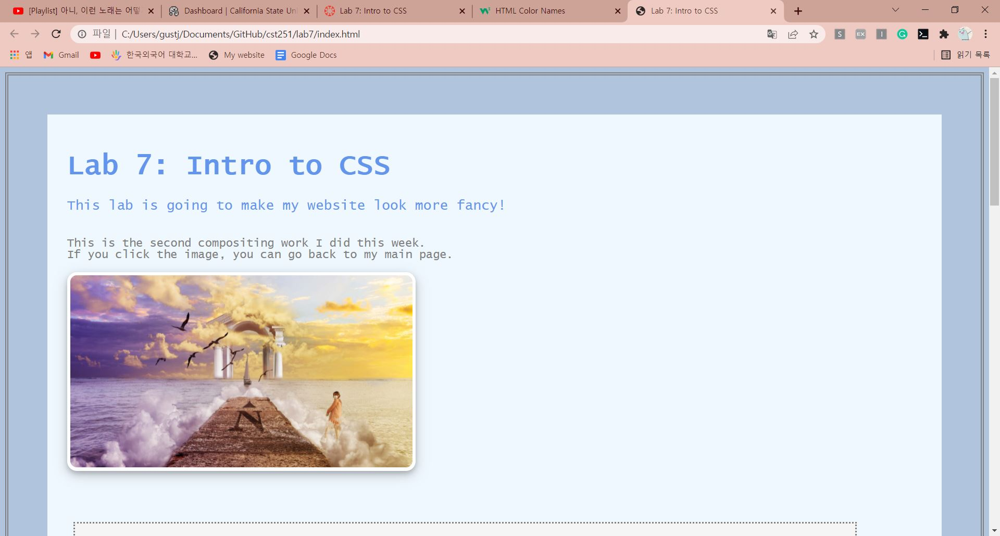
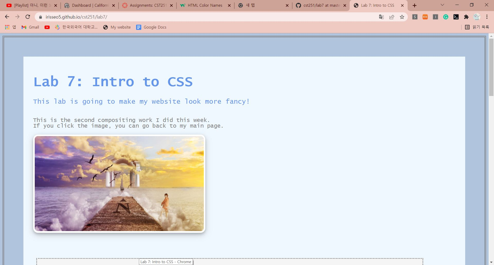

Lab 7: Intro to CSS
This lab is going to make my website look more fancy!
This is the second compositing work I did this week.
If you click the image, you can go back to my main page.
Challenges
This time, I deal with padding, margin, image styling, background color, and border.
At the same time, I learned how to use the div, body and main.
It's quite confusing at first, but I realized they help to make the css easier.
I made the image with the shadow, next time I'll try same thing with the div section.
Problems
I couldn't style the images separately depends which div they're in.
Results
I styled my webpage of lab7. And this is my source code.

And this is my html source code to lab 7
I tested it locally...
Finally, this is my uploaded page!
